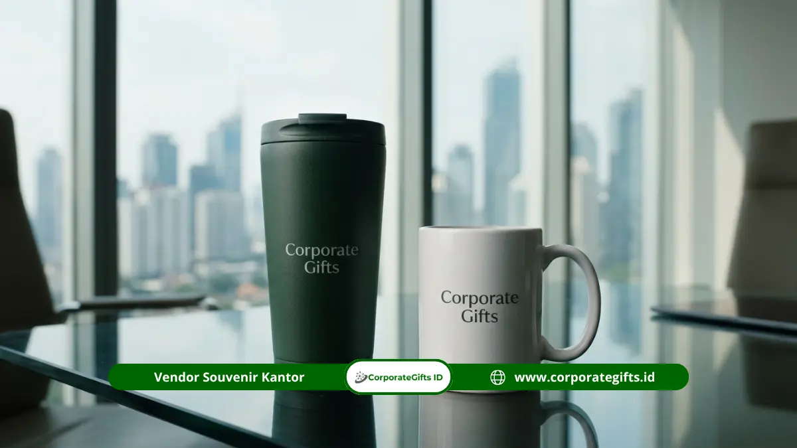

Corporate Gifts ID - Ide souvenir peresmian kantor yang berkelas meliputi notebook kulit, tumbler stainless, set pulpen logam, powerbank, desk organizer, dan gift set eksklusif. Semuanya berguna untuk aktivitas kerja dan mudah diberi logo perusahaan. Pilih ide yang paling cocok dengan citra brand Anda, lalu pesan bersama Corporate Gifts agar tampil rapi dan siap dibagikan.
Poin Kunci Souvenir Peresmian Kantor:
- Sepuluh ide di bawah dipilih karena fungsional, elegan, dan mudah dipersonalisasi.
- Barang yang dipakai harian memberi eksposur logo paling lama.
- Gift set cocok untuk tamu VIP, barang tunggal cocok untuk tamu umum.
- Bahan dan finishing menentukan kesan premium lebih dari ukuran barang.
Mengapa Perlu Memilih Ide Souvenir yang Tepat?
Pilihan yang tepat membuat tamu memakai souvenir Anda, bukan menyimpannya. Barang yang dipakai akan terus memperlihatkan logo dan nama perusahaan di meja kerja, ruang rapat, atau tas penerima.
Karena itu, sepuluh ide berikut disusun berdasarkan kegunaan, kesan elegan, dan kemudahan branding. Setiap ide menyertakan siapa penerima yang paling cocok.
Ide Souvenir Peresmian Kantor Bernuansa Profesional
1. Notebook Sampul Kulit
Notebook adalah ikon corporate gift. Sampul kulit atau kulit sintetis dengan emboss logo terkesan formal dan rapi. Cocok untuk klien, mitra, dan pejabat yang rutin mengikuti rapat.
2. Set Pulpen Logam
Pulpen logam dalam kotak kecil memberi kesan berwibawa. Barang ini ringan, praktis dibagikan dalam jumlah besar, dan logo dapat diukir laser dengan tajam.
3. Card Holder Kulit
Tempat kartu nama dari kulit cocok untuk tamu yang sering bertemu rekan bisnis. Ukurannya ringkas, sehingga mudah dikemas bersama barang lain dalam gift set.
4. Desk Organizer
Organizer meja menyatukan pulpen, ponsel, dan kartu nama dalam satu tempat. Bahan kayu atau kulit membuatnya serasi dengan interior kantor modern.
Ide Souvenir Peresmian Kantor yang Praktis Dipakai Harian
5. Tumbler Stainless Berlogo
Tumbler adalah pilihan serbaguna karena dipakai sepanjang hari. Warna netral seperti hitam, putih, atau hijau tua memberi tampilan elegan dan mudah dipadukan.
6. Mug Keramik Eksklusif
Mug keramik dengan kotak kemasan terasa lebih personal. Cocok untuk karyawan, staf mitra, dan tamu yang menghabiskan banyak waktu di kantor.

Ilustrasi souvenir tumbler hijau dan mug keramik putih pilihan souvenir kantor fungsional.
7. Powerbank Slim
Powerbank bermanfaat di hampir semua situasi. Pilih desain tipis dan bahan rapi agar tetap terkesan premium, serta pastikan logo diletakkan proporsional.
8. Mouse Pad Kulit atau Desk Mat
Desk mat memperlengkap meja kerja sekaligus menampilkan logo dalam ukuran besar. Barang ini memberi nuansa eksekutif yang sulit ditemukan pada souvenir biasa.
Ide Souvenir Peresmian Kantor untuk Tamu Kehormatan
9. Plakat Kayu atau Akrilik
Plakat bersifat simbolis dan cocok untuk tamu kehormatan seperti pejabat, mitra utama, atau tokoh masyarakat. Ukiran nama dan tanggal peresmian menjadikannya kenangan resmi.
10. Gift Set Eksklusif dalam Kotak Premium
Gift set menggabungkan notebook, pulpen, dan tumbler dalam satu kotak. Presentasinya mewah sejak dibuka, sehingga ideal untuk tamu VIP dan pimpinan perusahaan mitra.
Tabel Rekomendasi Souvenir Peresmian Kantor
Berikut ringkasan komparasi ide souvenir peresmian kantor berdasarkan material, target penerima, dan karakteristiknya:
| Ide Souvenir | Bahan & Karakteristik | Target Penerima | Kesan Utama |
|---|---|---|---|
| Notebook Sampul Kulit | Kulit sintetis, emboss logo | Klien, mitra, pejabat | Formal dan rapi |
| Set Pulpen Logam | Logam, kotak kecil, ukir laser | Tamu umum & profesional | Berwibawa dan praktis |
| Card Holder Kulit | Kulit ringkas, jahitan rapi | Rekan bisnis | Eksklusif dan fleksibel |
| Desk Organizer | Kayu atau kulit modern | Manajer, staf profesional | Fungsional di meja kerja |
| Tumbler Stainless | Stainless steel, warna netral | Semua tamu peresmian | Serbaguna dipakai harian |
| Mug Keramik Eksklusif | Keramik tebal, kotak kemasan | Karyawan, staf mitra | Personal dan dekat |
| Powerbank Slim | Bodi tipis, teknologi modern | Profesional mobilitas tinggi | Modern dan bermanfaat |
| Desk Mat / Mouse Pad Kulit | Kulit premium, ukuran lapang | Eksekutif dan pimpinan | Elegan di ruang kerja |
| Plakat Kayu / Akrilik | Kayu atau akrilik ukir nama | Tamu kehormatan & pejabat | Simbolis dan resmi |
| Gift Set Eksklusif | Kotak premium multi-produk | Tamu VIP & pimpinan mitra | Mewah sejak awal dibuka |
Bagaimana Cara Memilih Ide yang Paling Cocok untuk Acara Anda?
Pilih berdasarkan tiga hal: jumlah tamu, anggaran per paket, dan karakter perusahaan. Dengan ketiganya, Anda dapat mempersempit sepuluh ide di atas menjadi dua atau tiga kandidat.
- Tamu banyak dan anggaran terbatas: pulpen, mug, atau notebook ringkas.
- Tamu terpilih dengan anggaran lebih besar: gift set atau desk mat kulit.
- Tamu kehormatan: plakat atau cinderamata ukir.
Apa yang Membuat Souvenir Terlihat Premium?
Souvenir terlihat premium karena kombinasi bahan, finishing, dan kemasan yang konsisten. Ukuran besar atau harga tinggi bukan satu-satunya penentu.
- Bahan: kulit, logam, kayu, dan keramik memberi kesan lebih berkelas daripada plastik tipis.
- Finishing: emboss, ukir laser, dan hot stamping menghasilkan logo yang tajam dan tahan lama.
- Warna: palet terbatas, misalnya hijau tua, hitam, dan emas, terkesan elegan.
- Kemasan: kotak yang rapi menaikkan nilai persepsi sebelum barang dilihat.
Kesimpulan
Dari sepuluh ide di atas, pilihlah barang yang dipakai harian, berbahan baik, dan selaras dengan identitas perusahaan. Gunakan gift set untuk tamu VIP dan barang tunggal berkualitas untuk tamu umum.
Butuh bantuan memilih dan memesan? Konsultasikan kebutuhan acara Anda bersama Corporate Gifts dan dapatkan souvenir peresmian kantor yang siap membuat tamu terkesan.
Pertanyaan Seputar Souvenir Peresmian Kantor (FAQ)

Ditulis oleh: Sholikhatun Nikmah
Creative Product Designer & Bespoke Packaging ConsultantSpesialis pengadaan corporate gift, souvenir kantor, dan hampers promosi B2B di CorporateGifts.ID. Berpengalaman dalam merancang kurasi cinderamata institusional dan branding korporat yang berdampak nyata.
Lihat Profil Lengkap & Panduan Lainnya